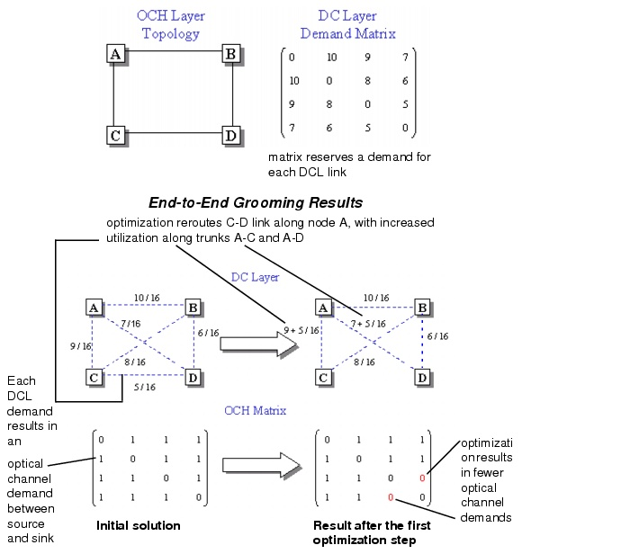

Grooming DCL to OCH Traffic > Optimization Algorithms: Descriptions > End-to-End (ETE) Optimization Algorithm
End-to-End (ETE) Optimization Algorithm
The end-to-end (ETE) optimization algorithm is a two-step attempt to improve network cost:
The result is that fewer optical channels (with higher effective utilizations) are required, at the expense of switching cost in intermediate DXCs.
Algorithm Description
The end-to-end algorithm does the following steps:
- Initial Solution (no intermediate grooming)—Establish a direct trunk for each traffic demand. If you specified 1 + 1 protection with disjoint routes in the physical layer (that is, if Link Disjoint is set to OTS, OMS, or OCH), the algorithm establishes two direct trunks: one for the working path, the other for the protection path. There is no switching (no intermediate grooming) in the DXCs.
If you specified 1 + 1 protection with disjoint routes in the DCL layer, SP Guru Transport Planner uses the shortest-cycle approach to create link-disjoint working and protecting paths in a fully meshed DCL layer. In this event the protecting path is a multiple-hop path, which implies switching in the DXCs.
- Select the DCL link with the maximum redundant cost (= unused part * DCL cost) that has not yet been inspected.
- New solution—Try to reroute the traffic using available time slots on other trunks. This might involve splitting traffic over multiple trunks. If you specified 1 + 1 protection, the algorithm will ensure that the working and protection paths for a DCL demand are disjoint (down to the specified layer of disjointness).
- Repeat steps 2 and 3 until all links have been inspected.
The following diagram provides an example of end-to-end grooming in action (in this case, a DCL demand without protection). The optimization step runs only if this results in a net cost saving, which depends on the cost parameters used.
Figure 8-13 OCH Topology and DCL Demands Before End-to-End Grooming

| Home © 1987-2007 OPNET Technologies, Inc. All Rights Reserved. This software may be covered by one or more U.S. Patents. See complete patent notice in the Legal Notices section. OPNET Support Center |